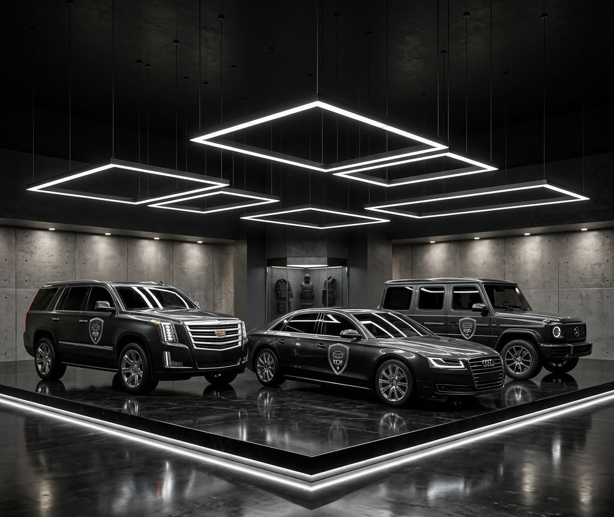
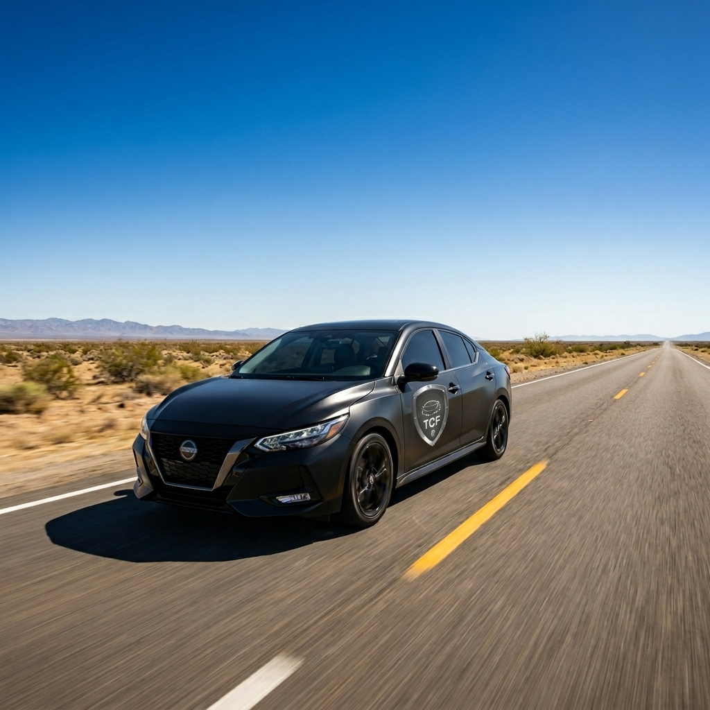
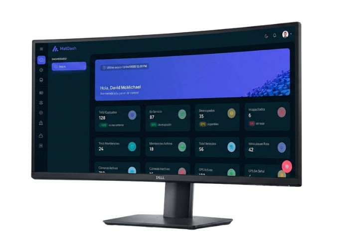
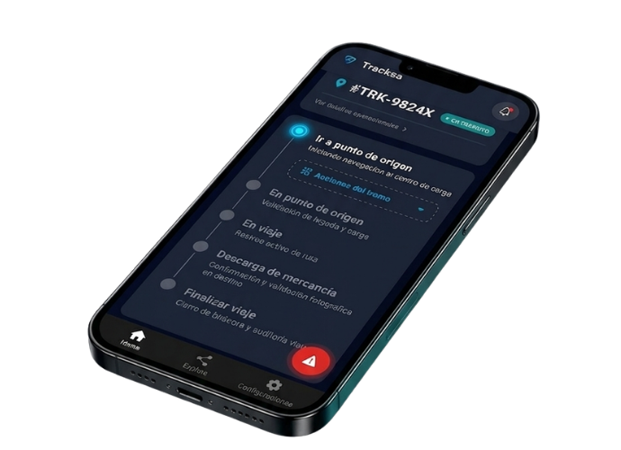
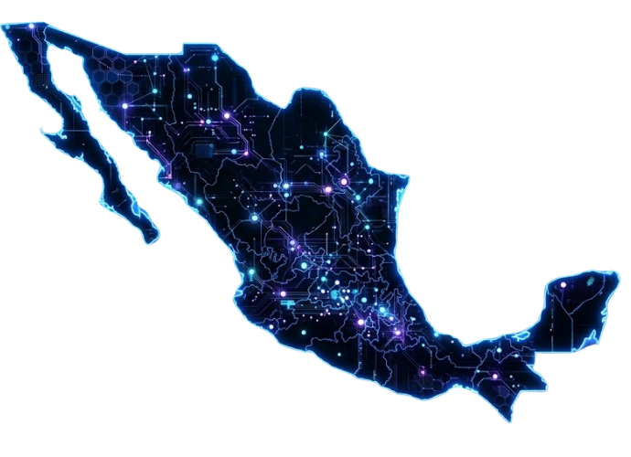

Protección Integral
Seguridad robusta y confiable en cada kilómetro. Garantizamos la integridad de su carga desde el origen hasta el destino, sin excepciones.
Servicios profesionales de custodia física, ejecutiva y armada para el transporte seguro de su carga. Su mercancía en buenas manos. Su destino, asegurado.
Seguridad robusta y confiable en cada kilómetro. Garantizamos la integridad de su carga desde el origen hasta el destino, sin excepciones.
Tecnología de vanguardia al servicio de su tranquilidad. Rastreo GPS en tiempo real, bitácora digital y reportes fotográficos con nuestra plataforma Kustek.
Cada cliente es único. Diseñamos soluciones de custodia a la medida de su operación logística, con soporte dedicado en cada etapa del servicio.
En TCF diseñamos y ejecutamos soluciones de custodia física adaptadas a la realidad de su negocio. Protegemos su mercancía, su carga y sus vehículos durante todo el trayecto — con personal certificado, tecnología de rastreo en tiempo real y protocolos de seguridad de alto estándar.
Desde una custodia convencional hasta operaciones con custodia armada o con candado de seguridad, nuestra misión es que cada viaje llegue a buen puerto: sin incidentes, sin retrasos, sin sorpresas.


Nuestros vehículos de custodia están equipados con tecnología anti-jammer de última generación. Incluso ante intentos de bloqueo de señal, el sistema mantiene comunicación satelital activa y continúa transmitiendo la ubicación en tiempo real.
Nuestra plataforma propietaria de gestión operativa. Visibilidad total de cada viaje, cada custodio, cada incidencia — desde cualquier dispositivo, en cualquier momento.


Descarga Kustek y gestiona tus operaciones de custodia desde cualquier lugar. Disponible para Android e iOS.
Un asesor le contactará en menos de 24 horas para activar su acceso a Kustek y comenzar a proteger su carga.
Sin compromiso · Respuesta en menos de 24h · 100% confidencial
En TCF aplicamos un sistema de seguridad de múltiples capas para garantizar la protección total de su mercancía durante cada operación de transporte.
Localización continua y precisa en cada tramo de la ruta.
Custodios entrenados en seguridad privada de alto nivel.
Evidencia visual verificable en cada checkpoint del trayecto.
Canales abiertos y actualizaciones durante toda la operación.
Procedimientos estandarizados desde el origen hasta el destino.
Protocolos de emergencia activos 24/7 para cualquier escenario.
Nuestros servicios de custodia están disponibles en todo el territorio mexicano. Operamos en las principales rutas de transporte y nos adaptamos a los destinos específicos de cada cliente.

Noroeste Norte Noreste Bajío Centro · HQ Golfo Sur-Sureste SuresteCuéntenos su operación. Le respondemos en menos de 24 horas.
"La diferencia entre una entrega y una entrega segura se mide en cada kilómetro."